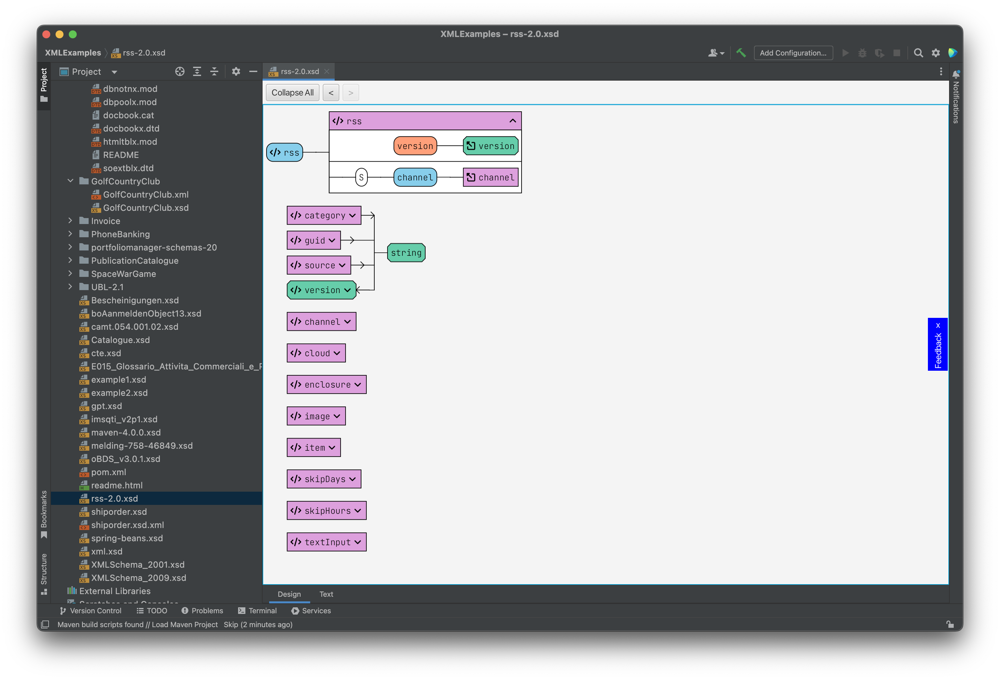
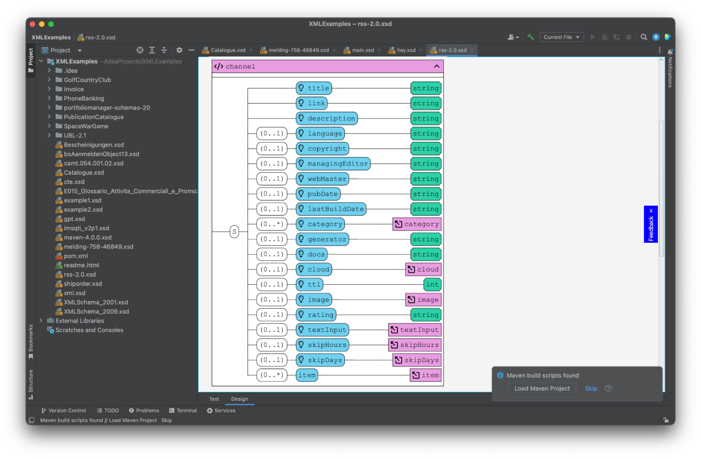

By focusing on visualization - for the cost of editing features at this moment - the "XSD Visualizer Plugin" aims to provide a solution that mitigates the steep learning curve often associated with these traditional schema visualization tools. Recognizing the importance of a user-friendly and intuitive experience, the "XSD Visualizer Plugin" prioritizes simplicity and ease of use.
Here are the same screenshots as before with the "XSD Visualizer Plugin":
The interface is much cleaner. Mostly because it's the UI of IntelliJ. But the plugin focuses mainly on the visualization.
|  |
The channel type has an arrow in front of it. When clicked, it doesn't open like in XMLSpy but instead moves the further down the already visible channel type and opens it. The complete type fits on the screen because the annotations are only shown as a tooltip when the user hovers the mouse cursor over the name. The presence of an annotation is shown by the light bulb.
|  |
By streamlining the user interface and intuitive interaction design, the "XSD Visualizer Plugin" enables users, including beginners, to quickly grasp the functionalities and harness the power of schema visualization. The visual representation of the schema's inheritance hierarchy, coupled with a seamless navigation experience, empowers users to understand the schema as a cohesive whole without struggling through complex learning curves. While its current scope is limited to IntelliJ and XML Schema, future developments will be explored and discussed in a subsequent section.